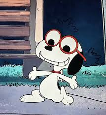
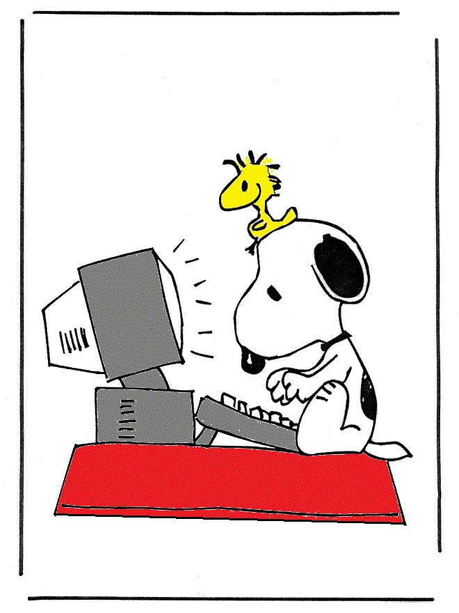

__Hola, soy Melanie!
Sobre Mi_
Estudiante de IV Computación. Desde que comencé mi carrera, descubrí una gran pasión por el desarrollo de software, la lógica y las tecnologías web. Soy una persona creativa, curiosa y comprometida con aprender cada día algo nuevo.
¿Qiuèn soy?

Soy estudiante, curiosa, medio responsable y apasionada por aprender. Me gusta mi carrera porque me permite crear soluciones reales con ideas que antes solo imaginaba.
Mi carrera

Me encanta entender cómo funcionan las cosas, sobre todo en el mundo digital. Cada línea de código es una oportunidad para construir, mejorar y transformar ideas en realidad.
¿Què se hacer?
Tengo conocimientos en programación, diseño web, bases de datos y lógica computacional. También manejo herramientas como Java, HTML, CSS, MySQL y más.
¿Còmo soy?
Me considero creativa, intento ser ordenada y comprometida con lo que hago. Me gusta aprender nuevas cosas,aportar ideas y terminar lo que empiezo.
Mis metas
.jpeg) Mi objetivo es seguir creciendo en el mundo de la computación, aprender más lenguajes de programación y algún día llegar a ser mejor.
Mi objetivo es seguir creciendo en el mundo de la computación, aprender más lenguajes de programación y algún día llegar a ser mejor.
Un poco sobre mì
.jpeg) Además de programar, me gusta el arte digital, escuchar música, ver películas y aprender cosas nuevas todos los días.span>
Además de programar, me gusta el arte digital, escuchar música, ver películas y aprender cosas nuevas todos los días.span>
¿Què me inspira?
.jpeg) Me inspira ver cómo la tecnología puede cambiar vidas. Cada herramienta o lenguaje que aprendo me motiva a imaginar todo lo que algún día podré construir.
Me inspira ver cómo la tecnología puede cambiar vidas. Cada herramienta o lenguaje que aprendo me motiva a imaginar todo lo que algún día podré construir.
Mi camino hasta ahora
.jpeg) Aprender computación ha sido un reto que disfruto. Cada clase, cada práctica y cada error me han enseñado algo valioso. Estoy orgullosa de mi proceso.
Aprender computación ha sido un reto que disfruto. Cada clase, cada práctica y cada error me han enseñado algo valioso. Estoy orgullosa de mi proceso.
Mi frase favorita
 "Lo esencial es invisible a los ojos."
— El Principito
"Lo esencial es invisible a los ojos."
— El Principito